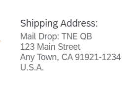

This topic is currently only applicable to SAP Fiori elements for OData V2.
It shows the label of the UI.ReferenceFacet and, below, only the label property of the address annotation. Therefore, the label property should contain the whole formatted address, with \n for new lines.
Other properties of the address annotation are not interpreted and rendered.
Example value for the label property: "Mail Drop: TNE QB\n123 Main Street\nAny Town, CA 91921-1234\nU.S.A.". This is shown as follows:
The address facet can be used in various places:
XML Annotation
<Record Type="UI.ReferenceFacet"> <PropertyValue Property="Label" String="Communication Address" /> <PropertyValue Property="Target" AnnotationPath="to_Address/@Communication.Address" /> </Record>
ABAP CDS Annotation
@UI.facet: [
{
label: 'Communication Address',
type: #ADDRESS_REFERENCE,
targetElement: '_Address',
purpose: #STANDARD
}
] CAP CDS Annotation
{
$Type : 'UI.ReferenceFacet',
Label : 'Communication Address',
Target : 'to_Address/@Communication.Address'
}XML Annotation
<Annotation Term="UI.FieldGroup" Qualifier="GeneralInformation">
<Record>
<PropertyValue Property="Data">
<Collection>
<Record Type="UI.DataFieldForAnnotation">
<PropertyValue Property="Label" String="Communication Address" />
<PropertyValue Property="Target" AnnotationPath="to_Address/@Communication.Address"/>
</Record>
</Collection>
</PropertyValue>
<PropertyValue Property="Label" String="Product Information"/>
</Record>
</Annotation>
ABAP CDS Annotation
@UI.fieldGroup: [
{
label: 'Communication Address',
value: '_ADDRESS',
type: #AS_ADDRESS,
qualifier: 'GeneralInformation',
groupLabel: 'Product Information'
}
]
_ADDRESS;CAP CDS Annotation
UI.FieldGroup #GeneralInformation : {
Data : [
{
$Type : 'UI.DataFieldForAnnotation',
Label : 'Communication Address',
Target : 'to_Address/@Communication.Address'
}
],
Label : 'Product Information'
}